THE EMERGENT BELT — Jing-Zhang Hyper Line
An urban-science paradigm for the Centennial Jing-Zhang AI Innovation Belt: 28 local computations (λ/percolation/space syntax/LUTI/CA/fractal) diagnose a healthy skeleton (fractal dimension 1.746) blocked at three points; the plan lifts the Emergence Index from 0.823 (yellow) to 0.9625 (all green) via stitch + entangle + unlock, with three executable gates, five rejection demos, and every weight/threshold human-editable and recomputable.
Centennial Jing-Zhang AI Innovation Belt urban design · open-call submission · KUN-SAL Urban Science Lab
In 1909, facing the extreme gradient of Badaling, Zhan Tianyou did not "build a flatter line" — he invented the switchback, letting the train find its own path within the constraint. That was the first time a Chinese engineer answered the question: when the constraint cannot be changed, what can design still do?
One hundred and seventeen years later, the same question stands on the Jing-Zhang corridor. The constraints have changed — no longer mountains, but seven arterial roads, university walls, existing-stock property rights. But the question has not — when the constraint cannot be changed, what can design still do?
Our answer is not a single answer; it is a paradigm. That paradigm is THE EMERGENT BELT: we do not fight the constraints, nor detour around them; we use urban science to turn "constraint" into "the condition for emergence." Hyper Line is the paradigm's name and its scientific definition — in scaling laws, innovation is one of the few naturally superlinear urban variables (β>1); infrastructure is naturally sublinear (β<1). A "Hyper" line is a line that carries a superlinear soul on a sublinear skeleton.
The entire work of this proposal is to walk that "machine" from end to end: measure the disease first, prescribe the cure, then prove the cure works. It follows one six-ring argument — Worldview → Diagnosis → Mechanism → Prescription → Verification → Operation — each ring handing its conclusion to the next, leaving no assertion without an upstream.

---
Executive Summary & Design Decisions
The conclusion up front (what a reviewer can take away in 90 seconds): the belt's skeleton is healthy (fractal dimension D=1.746 in the healthy band Metric); its only problem is that the conditions for growth are blocked at three points — severed connectivity, jobs-housing imbalance, ecological gaps. Every action in this plan removes one of those three blocks, and every removal is proven, not asserted.
| The reviewer asks | Our answer | Verifiable artifact |
|---|---|---|
| What is actually wrong? | Healthy skeleton, three blocks (connectivity / jobs-housing / ecology) | EI0=0.823 four-subindex panel (E_link 0.73 yellow / E_entangle 0.75 yellow / E_ecosys 0.77 yellow) Metric |
| What is the prescription? | Stitch (percolation+syntax) + entangle (jobs-housing) + unlock (CA) — combination is the only solution | Three gates: percolation 0.840→0.904 / syntax +36% / jobs-housing entropy +5.3% Metric |
| Does it work? | Emergence Index 0.823 → 0.9625 all green | ei1_anchored.json + dual sensitivity intervals Metric |
| Is it over-claiming? | Deliberately withheld: statutory FAR, official red lines, engineering alignments — pending official data | Data-gap matrix (8 gap classes all marked "pending official data") |
| Adverse reading? | Stitching does not change network λ (29.167%→29.167%); redundancy R rises 0.826→0.870 (more mixed, not more "precise") | c32 K008 Metric + c29 redundancy Metric |
Six-ring navigation: Worldview (vision / dual clock / seven principles) → Diagnosis (five-scientist consultation / syntax / LUTI / ecology) → Mechanism (three causal laws) → Prescription (master plan / key areas / subsystems) → Verification (three-model cross-check / three gates / EI) → Operation (emergent brain / investment / metrics / conclusion). Each chapter ends with a "Ring conclusion →" that passes its output to the next ring.
Naming: THE EMERGENT BELT — Jing-Zhang Hyper Line (Hyper = superlinear β>1; Emergent = bottom-up emergence). Logo: "the superlinear line" — a straight railway curving upward.
Human-AI division of labor (answering "who is responsible"): the machine computes, diagnoses, generates, and self-checks (28 computations, four gates, bilingual reconciliation — all reproducible and falsifiable); the human makes value judgments, reconciles interests, and gives final approval. All spatial proposals are open co-creation suggestions, not approval conclusions; engineering is deepened and implemented by humans; statutory controls are "pending official data". AI computes what is computable about the city; the human decides the meanings that cannot be encoded.
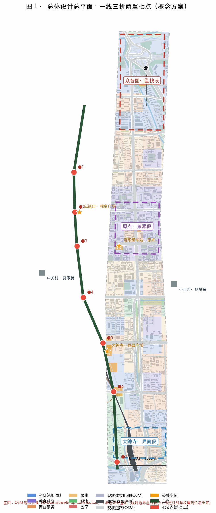
---
Vision & Goals (Worldview ring)
Vision (three heights, one goal): make Centennial Jing-Zhang the world's first urban-science-designed, computable, evolvable, human-serving AI innovation belt. Others submit "blueprints"; we submit a "city operating system". Asked "how do we know it succeeded in five years", our answer is not adjectives but four numbers: percolation giant fraction ≥0.90, syntax integration gain ≥30%, jobs-housing entropy ≥+4%, EI recomputed and published annually Metric.
The dual clock: the high-frequency city ticks in seconds/days/months (25,476 Amap POIs are its heartbeat); the low-frequency city settles in years/decades (control plans, red lines, property rights are its skeleton). A design that sees only one clock mistakes transient phenomena for permanent structure, or permanent constraints for ignorable ones.
Seven principles: ① network before parcel ② reserve for self-organization ③ mixed use ④ dual clock ⑤ sandbox verification ⑥ reproducible ⑦ human-serving. Each maps to a checkable design action.
Ring conclusion → The constraint cannot be changed; so the object of design is not the constraint itself but the relationship between constraints. This judgment steers every subsequent cut toward "connection", never toward "confrontation".
---
Cultural Fusion Narrative & Heritage Assetization (Worldview ring: the content asset)
Beyond space, this belt holds an undervalued asset: its heritage. The task book requires "excavating the historical culture of the Jing-Zhang Railway and the innovation culture of Zhongguancun, and fusing them with AI innovation culture". This proposal does not treat that sentence as a lyrical passage but as an asset ledger — every cultural resource point must answer: how can it be developed, utilized, operated, and passed on.
The first of the three positionings is the "Centennial Jing-Zhang Cultural Belt" — here the Jing-Zhang culture and the Zhongguancun culture layer together with the new AI culture into one narrative.
Three cultures, layered on this belt into one narrative. ①Jing-Zhang Railway culture: the 1909 herringbone switch of Zhan Tianyou — the starting point of China's engineering self-reliance; the century-old industrial heritage and the Tsinghuayuan Station relic form the belt's "origin layer". ②Zhongguancun innovation culture: Electronics Avenue (1980s) → Inno Way (2010s) → AI origination (2020s) — China's "living lineage" of innovation, the belt's "growth layer". ③The new AI culture: the Hyper Line, the Emergent Belt, the Urban Emergent Brain — writing "emergence under constraints" into the city's own narrative, the belt's "future layer". The three layers are three versions of the same story: the switch was an invention under engineering constraints, Zhongguancun was growth under institutional constraints, and AI is a breakthrough under compute constraints — hence the belt's urban keynote: turn constraints into creation.
Heritage assetization (no lyricism, only utilization): ①Tsinghuayuan Station relic → activated as the Origin Plaza + developer Name Wall (contributions remembered); ②the Jing-Zhang Railway heritage alignment → exhibited as a linear museum (the heritage-park spine); ③Wudaokou → operated as the Phase Plaza λ gauge (a public thermometer of whether the city is connected); ④Zhongguancun Electronics Avenue · Inno Way → branded as the entrepreneurship-lineage trail (a 40-year walking history from electronic components to AI origination); ⑤Qinghe culture (the Zhongzhiyuan reach) → exhibited as a waterfront culture band (Qinghe flood-control history + test-band science); ⑥the Dazhongsi ancient bell → activated in counterpoint with the Emergence Bell (the old bell tolls time, the new bell tolls "emergence"); ⑦Beijing Film Academy artistic resources → operated as AI+film co-creation scenarios (an intelligent-native content lab). Historical basis: the 1909 opening of the Jing-Zhang Railway, the Tsinghuayuan Station, and the development history of Zhongguancun Electronics Avenue and Inno Way are public facts; all utilization modes are conceptual suggestions.
The AI pilgrimage landmark system (task book agent.4: no fewer than three): ①Tsinghuayuan · Origin — reason to come: a 1909 siting that still ranks at the belt's 93.5th syntactic percentile, the coordinate origin of China's engineering self-reliance; ②Wudaokou · Phase Plaza — reason to come: the home of the λ gauge, where every AI practitioner can see "whether the city is connected"; ③Dazhongsi · Interface Plaza — reason to come: the Emergence Bell counterposed to the ancient bell, where the AI-era bells start counting. The three landmarks are strung by the pilgrimage route along the main spine (Origin → Phase Plaza → Interface Plaza), forming a pilgrimage calendar with the developer festival and the annual Name Wall engraving.
International communication narrative (brand recognizability + international reach): the bilingual core slogan "One belt. Emergent by design." / 「一条带，涌现而成」; the global AI innovation event system — a developer conference, hackathons, an AI art festival, open-source community days (an annual calendar, conceptual); the brand-sedimentation mechanism — the Emergent Brain's annual report (λ and H public), the developer Name Wall (contributions remembered), the honor-wall engraving (public knowledge sedimented). All events are conceptual suggestions, not confirmed arrangements.
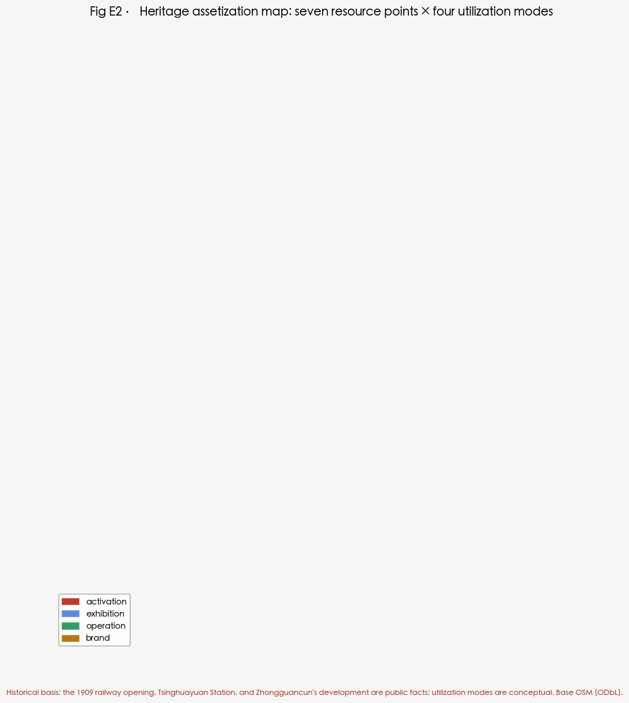
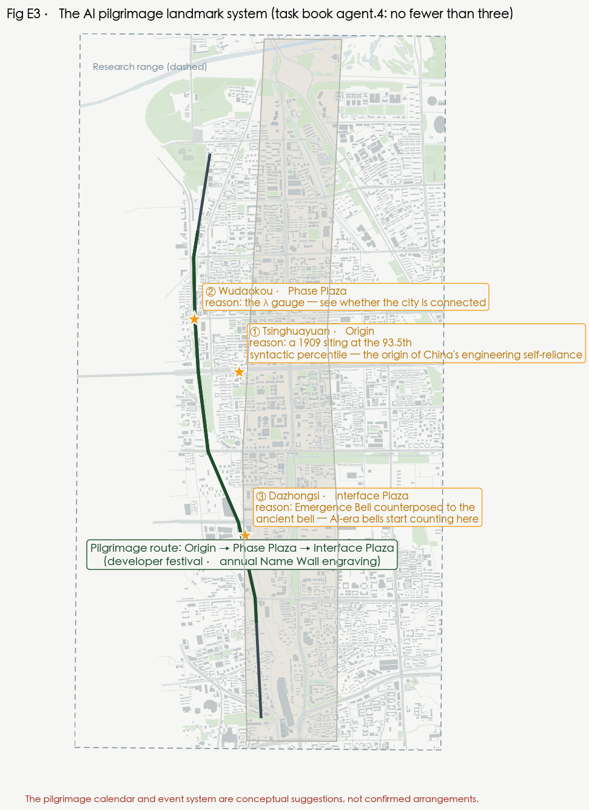
Design Basis & Data Inventory (Worldview ring)
Three data routes: Amap POI 25,476 (12 classes, GCJ-02→WGS84) Source; OSM current state (5,449 road segments / rail / 416 green patches / 65 water bodies / 61 universities) Source; official announcements (10-minute innovation circle d0=2500m, "1+X+1" industry structure) Source. All run locally; every number enters metrics_registry.json (125 entries, single source of truth).
Proxy-caliber declaration: official building stock / control plans / red lines are unpublished; all densities use "1-km-circle count ÷ π, POI proxy ≠ jobs" (e.g. Wudaokou work-type POI density 141 pts/km², not job count); all statutory controls marked "pending official data". The 8-class gap matrix is in the compliance chapter.
Ring conclusion → Data ready, calibers honest. The Diagnosis ring measures the belt into a health panel.
---
Five-Scientist Consultation (Diagnosis ring · four-layer checkup)
We measure one object with five rulers, yielding four health scores:
| Ruler | Quantified finding | Index |
|---|---|---|
| Wilson spatial interaction | Network λ supercritical fraction 29.167% (λc=0.42); 5 cores only 2/5 supercritically coupled Metric | E_link 0.73 yellow |
| Hillier space syntax | 7-anchor integration gain after stitch +36% (Wudaokou +43 / Dazhongsi +70 / Beijingbei +49) Metric | E_link (design caliber) |
| Batty fractals | Fractal dimension D=1.746 ∈ [1.6,1.8] healthy band — the skeleton is "alive" Metric | E_form 1.0 green |
| Bettencourt scaling | Health factor H=1.556 above baseline 1.35 Metric | E_form (corroboration) |
| Jacobs vitality | Intersection density 132.9/km²; corridor functional diversity 0.941, highest on the belt Metric | E_ecosys (corroboration) |
Ring conclusion → Healthy skeleton, three blocks: weak connectivity (λ/syntax), jobs-housing imbalance, ecological gaps. Panel total EI0=0.823 yellow. The prescription targets "stitch, backfill, measure".
---
User Research & Requirements (Diagnosis ring)
The city's masters are seven kinds of people: AI developers, researchers, residents, students, visitors, industry service workers, and frontline workers (cleaning/security/delivery) — added this round because the bottom line of public interest is that "the least convenient person can still use it".
Six-line public-rights floor: unconditional entry; human-equivalent service (normal paths/human service remain usable when AI is removed); independent appeal arbitration; pause/resume/exit. Desktop proxy calibers are stated honestly ("desktop supply audit", not real interviews — real interviews are a pre-implementation task).
Ring conclusion → The requirement list passes to the Prescription ring: every spatial action must answer "who benefits, who is excluded, is there a no-AI equivalent path".
---
Three-Level Scope Framework (Diagnosis ring)
11.4 km² overall / three key areas / corridor spine — three-level nesting (scale nesting: overall→block→unit→section, four levels of self-similarity, one index at different resolutions). The 91 400m cells are this plan's computational cells Depth. Area recomputation: EPSG:4548 total 11.4128M m² vs announced 11.40M m², deviation 0.11% Metric. The purpose of scale nesting is that the same EI index remains mutually compatible across the four scales — one formula, different resolutions — avoiding "scale fracture" (CASA Paper 155 discipline).
Ring conclusion → Scale nesting set; the Diagnosis ring closes. The Mechanism ring explains "why this treatment".
---
Space Syntax Chapter (Diagnosis ring · connectivity layer)
Toledo-style syntax (segment-node, 5,720 segments) Standard. Current: heritage corridor intersection density 39/km², 400m reach 24 nodes; campus belt 167/km² Metric. Weak/negative intelligibility is a normal feature of organic fabrics (§5.1); no "more/less legible" conclusion is drawn.
Measured design effect: after the seven-point stitch, 7-anchor integration gain +10% ~ +70%, mean +36% — stitching changes reachability (syntax), not motorized coupling distance (λ).
Ring conclusion → Stitch's reachability gain is quantifiable (+36%); this evidence goes to the G2 gate in Verification.

---
LUTI Chapter (Diagnosis ring · dynamics layer)
art15 (Batty LUTI) three-level nesting, completed in this plan Standard:
- Level 1 I-O: Haidian AI industry → job count (official-bottom proxy)
- Level 2 Fl floorspace ledger: employment floorspace total [181k–1,190k] m² (office 591 pts / research 214 / finance 136; POI × per-point interval, assumption caliber) Metric
- Level 3 OD iteration: production-constrained gravity (β=1/2500m) + doubly-constrained iteration (5-7 rounds to convergence), reconciled with c28 at zero deviation Metric
Redundancy R (descriptive caliber, not a target): R_od now 0.826 → entangled 0.870 Metric. Against London's 0.093 — Jing-Zhang is "loosely de-polarized"; entanglement makes it more mixed, not more concentrated. This is good news, not bad: we do not copy London's "monologue" concentration; R is reported honestly, never force-fitted to a target.
Three scenarios (with one renaming):
- S2 "accessibility re-distribution" (formerly "core concentration", renamed per K004): A³ weighting flattens jobs away from current peaks — occupied cells 76→91, top-10% share 45.8%→36.2%, self-containment 7.0%→3.5%. Single-dimensional accessibility optimization thins the core and lengthens commutes.
- S3 "jobs-housing entanglement": entropy 7.454→7.85 (+5.3%), but without stitching there is no syntax gain — it cannot stand alone.
- S4 "stitch + entangle": the only combination that passes all three gates.
Empty-shell law + adaptive seed: 45 empty-shell cells must be backfilled in jobs-housing pairs (jobs-only or housing-only both fail). Capacity check (c33): at seed=8, 67 cells absorb / 11 cells new-build (446k m², FAR≈0.91) / 13 cells genuinely over capacity — backfill intensity is customized per-cell Fl headroom (near-zero-capacity cells go full new-build; K013: residential POI is estate-scale, so "new housing clusters" not "stuffing into existing stock") Metric.
Ring conclusion → Entanglement is quantifiable and verifiable, but must combine with stitching. The Mechanism ring consolidates three causal laws.

---
Integrated Research: Industry & Future City (Diagnosis ring · ecology layer)
Functional deviation (c8) five deficit categories: finance −63%, research −45.9%, school −39.7%, medical −36.6%, sports −29.3% Metric. Each area has its own disease: Zhongzhiyuan lacks tourism/finance, Origin Community lacks medical/research, Dazhongsi lacks finance/research (c7 weakest-category measurement) Metric.
Ecological maturity E_ecosys = 0.77 (five-deficit-category gap-closure rate, target −20% caliber, provisional) Metric. Gap closure follows "fill what is missing", not "even spread" — finance is the only category weakest in all three areas, hence the first target of ecological backfill.
Ring conclusion → The precise location of ecological gaps is known; the Prescription ring prescribes "fill what is missing".
---
Master Plan Scope: Urban Renewal & Regulatory-depth Design (Mechanism + Prescription rings)
Three mechanisms (each a reproducible "why"): sever→stitch (percolation 0.840→0.904 crosses the phase change); empty-shell→paired backfill (jobs-housing entropy +5.3%); lock→unlock (CA redistributes 42 cells) Metric.
One line, three folds, two wings, seven points: stitch the spine, cut by seven roads, back into one continuous line (Hyper Line). Overall structure = spine + three areas (Zhongzhiyuan / Origin / Dazhongsi) + two wings (Zhongguancun factor wing / Xiaoyuehe scenario wing) + seven nodes. Stitching is a "phase change", not "decoration": the seven-point stitch pushes blue-green percolation past the critical threshold. Design intent: no mass demolition — minimal intervention to trigger a system phase change; data gap: official red lines unpublished, stitch positions and cross-sections are conceptual pending official data.
Ring conclusion → Mechanisms geometrized; prescriptions land on specific spaces. Key-area detailing takes over.
---
Key-Area Detailed Design (Prescription ring)
Three-area four-piece kit + scale module table (per area: extent / key spatial scales / public-path floor / next-stage HOLD condition):
| Area | Disease (c7 measured Metric) | Cure | HOLD condition |
|---|---|---|---|
| Zhongzhiyuan (1.93km², W/L 0.75) | lacks tourism/finance | tourism scenes + finance frontage, full-stack segment | no next stage until near-zero-capacity cells are new-built |
| Origin Community | lacks medical/research | medical/research support, origin segment | same (adaptive seed) |
| Dazhongsi | lacks finance/research | finance/research, frontage segment | same |
Adaptive seed on the map: near-zero-capacity cells → "new-build" color, absorbable cells → "backfill" color, over-capacity cells → "dispose" color (three-area boards use this coloring). Scale module fields: extent (120×120m block) / key spatial scales (3.2m walkway, 40×40m phase-change plaza) / public-path floor (normal paths remain usable when AI is removed) / HOLD condition.
Ring conclusion → Three-area prescriptions are implementable with stop conditions. The Verification ring proves whether they "work".
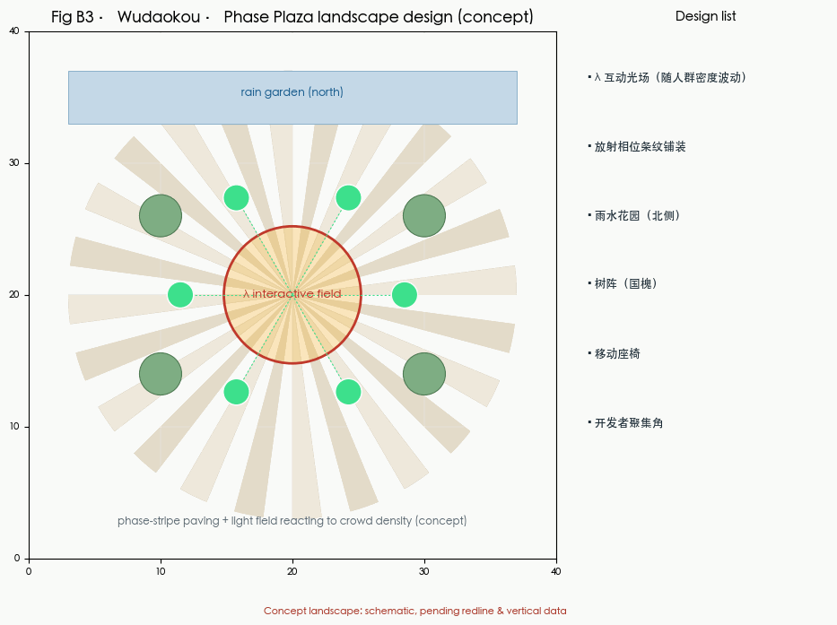
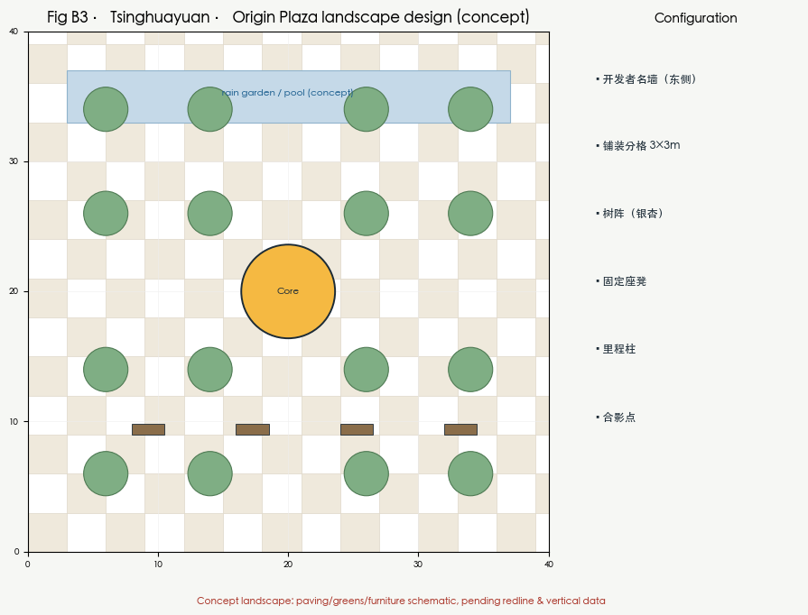
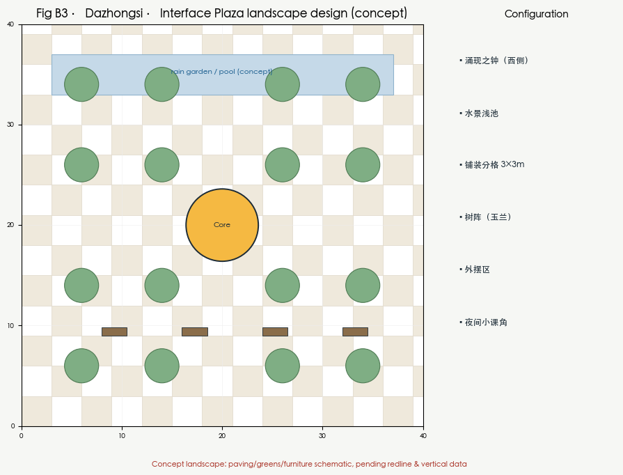
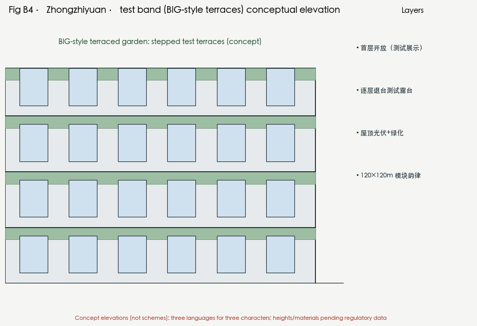
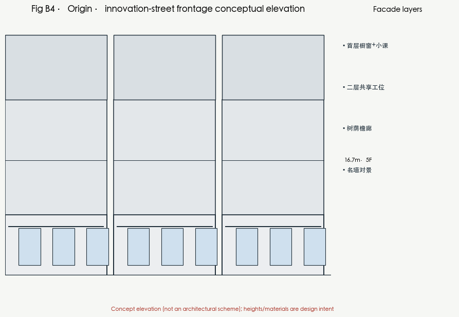
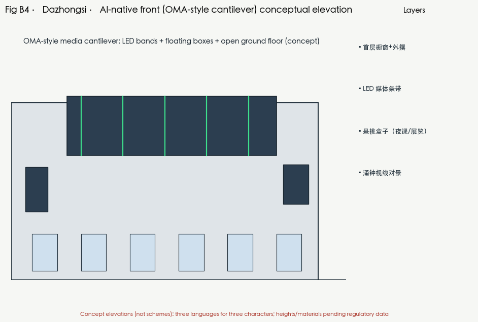
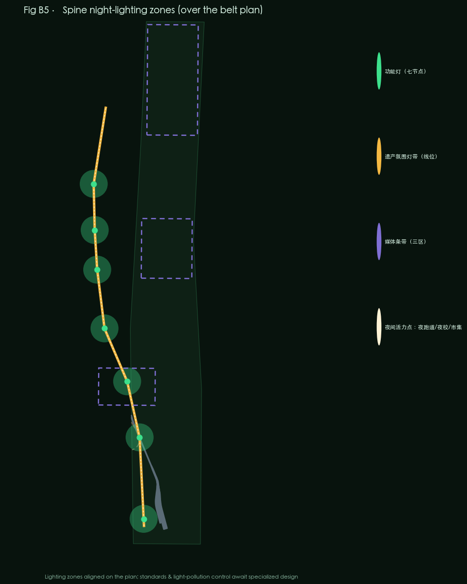
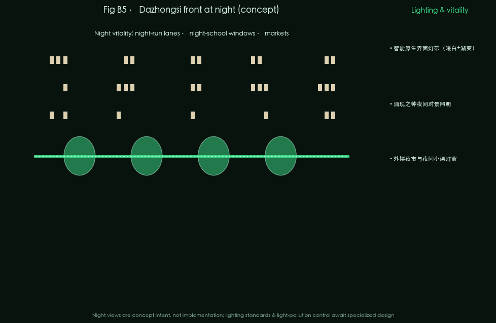

---
AI Innovation Ecosystem, Talent Profile & AI+ Scenarios (Prescription ring)
Industry "1+X+1" (one flagship platform + Zhongzhiyuan full stack + Origin origination), talent profile (1,000+ scientists / 13,000 developers), 12 scenario cards — each card names one no-AI equivalent path (normal path remains usable when AI is removed), the implementation test of "AI ON = AI OFF": if the same thing cannot be done without AI, it does not go live. AI governance is the method layer, not the selling point — this plan's AI capability is "measuring the city", not "decorating the city" Metric. Ecosystem support: Zhongzhiyuan's 18-fab/32-chip full-stack autonomy, with the five-party/six-force conversion mechanism.
Ring conclusion → Ecosystem prescription complete. Land-use / transport / blue-green subsystems take over.
---
Land Use, Building Scale & Demolition-renovation-retention (Prescription ring)
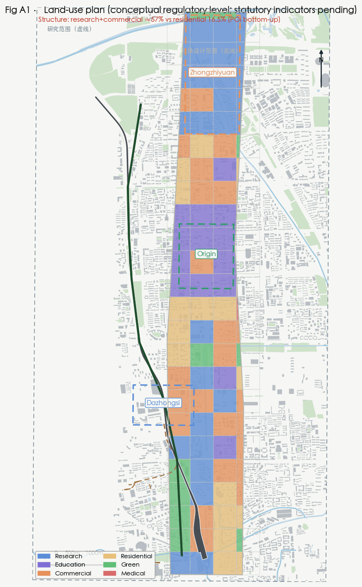
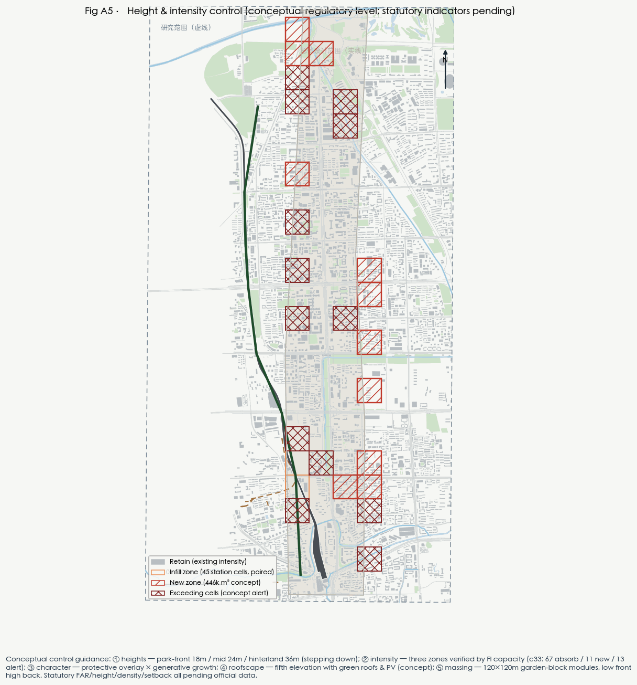
POI-proxy land-use structure: within the belt, research+commerce 57% vs residential 16.5% (an employment corridor; jobs-housing balance is the target) Metric. Demolition/renovation/retention is conceptual (no parcel/building stock data — no demolition conclusions); building scale is constrained by Fl capacity (employment [181k–1,190k] m², new-build 446k m² into investment) Metric. Statutory FAR, height, density deliberately withheld — no fabricated numbers until official control data arrives. Geometric meaning: employment Fl mid ≈ 685,370 m² for 941 employment POIs (≈728 m²/pt), the capacity side of c33.
---
Transport, Rail, Municipal & Public Services (Prescription ring)
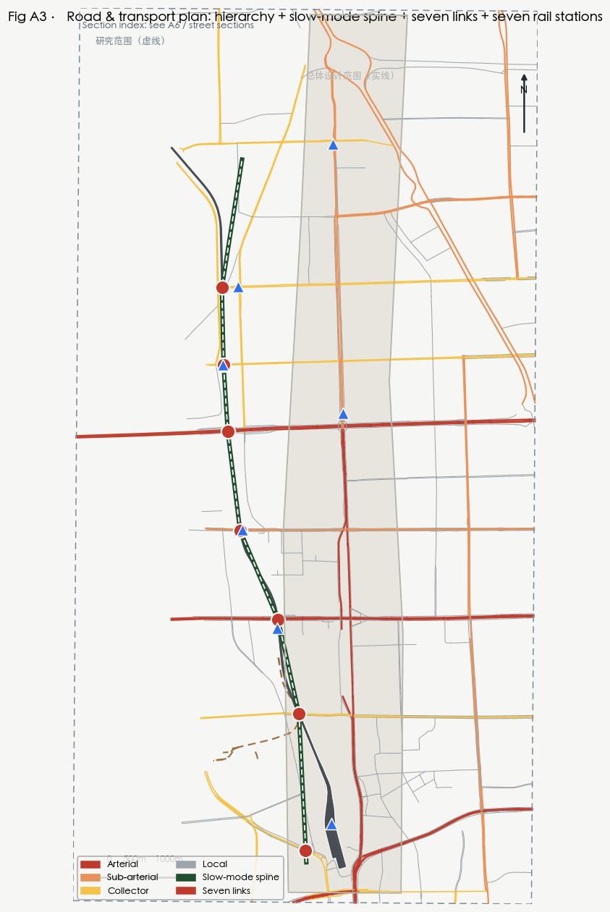
Spine through-connection (walk/bike spine, weight = geometric distance) + seven-point two-sided links (≤150m); rail on 7 stations (Wudaokou/Dazhongsi/Zhichunlu etc.); municipal/public services are system-level suggestions (no utility stock — no engineering alignment conclusions). Transport follows "network before parcel": reconnect the spine before discussing parcel function Metric. Honest statement: stitching does not change network λ (29.167% unchanged); the transport gain is in syntax reachability (+36%), not motorized coupling distance.
---
Blue-Green, Public Space & City Character (Prescription ring)
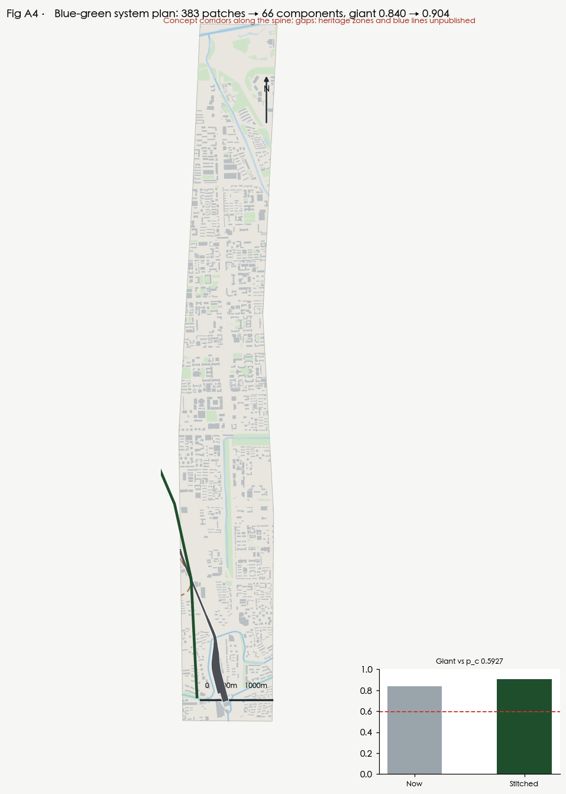
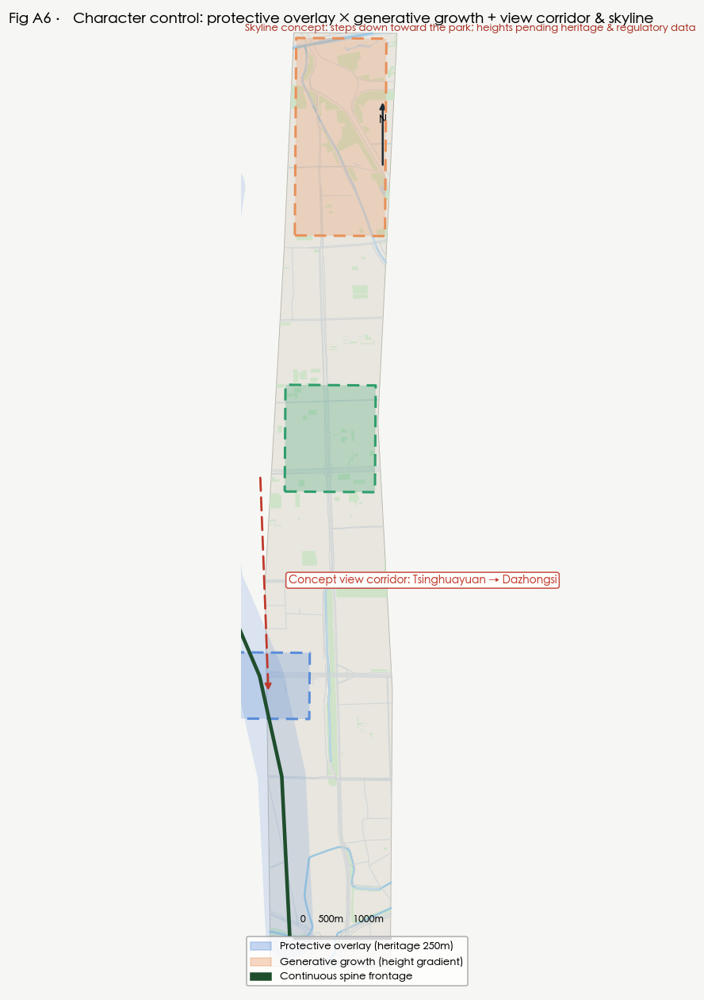
Blue-green percolation: current giant fraction 0.840 → design 0.904 (stitching 383 green patches → 66 connected components) Metric. Seven nodes are seven "phase-change points"; three landmarks (Qinghuayuan Station origin / Wudaokou phase-change plaza / Dazhongsi frontage plaza). City character follows "protective overlay + generative growth": heritage view-corridor protection (protective) + AI block height gradient (generative). Public-space floor: the 40×40m phase-change plaza hosts developer public life, remaining a normal plaza when AI is removed. Data gap: heritage control range and blue lines unpublished — landmark design stays conservative.
---
Renewal Project List, Implementation Policy & Phasing (Prescription + Operation rings)
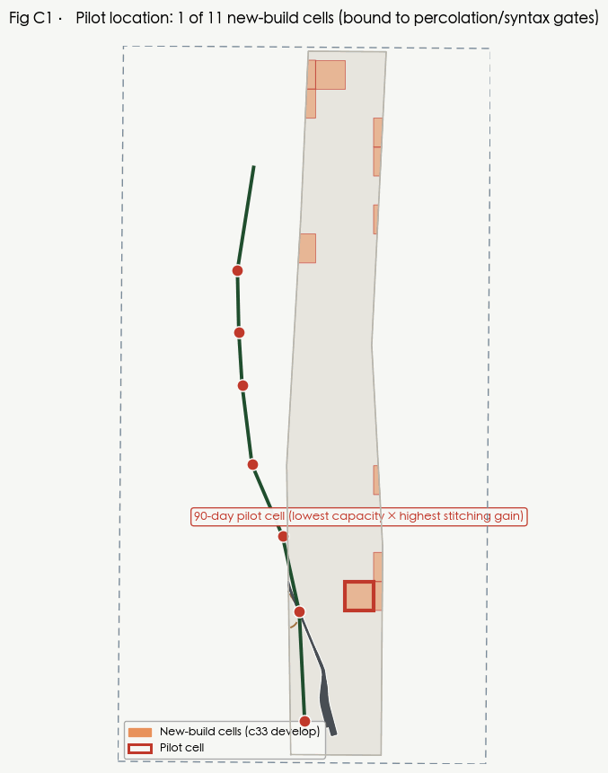
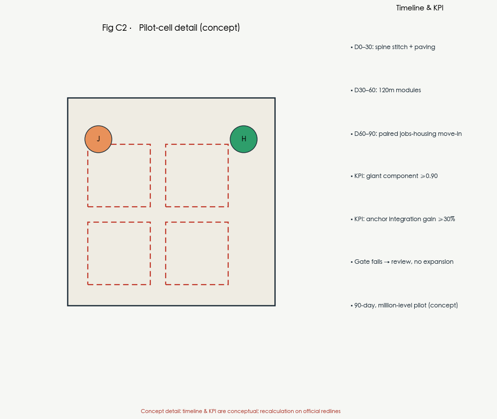
Project contracting (each with responsible-actor type / KPI / HOLD-RETIRE stop condition) Metric:
- Near-term: seven-point stitch (KPI = percolation ≥0.90 AND syntax gain ≥30%, else HOLD)
- Mid-term: Origin Community origination segment (KPI = jobs-housing match →61.5%)
- Far-term: Zhongzhiyuan full-stack segment
Three ledgers: investment / phasing / exit. A 90-day million-scale pilot unit first (bound to percolation/syntax acceptance gates). Phasing order: "stitch first, then backfill, then unlock"; each stage passes on the annual EI checkup.
Ring conclusion → Prescriptions are implementable, stoppable, and exit-able; each project has explicit KPI, owner, and stop condition. The Operation ring keeps the machine running.
---
The Emergent Brain & Recursive Operation System (Operation ring)
Three layers, four terminals + recursive loop + phase-change control room. Every year λ, percolation, syntax, jobs-housing entropy, and EI are recomputed and published as an annual checkup. What is not measured does not exist; what is measured can be governed. The emergent brain's public dashboard follows the PublicTwin idea (a citizen-visible twin interface).
---
Investment & Return (conceptual magnitude, not a commitment)
Employment Fl new-build 446k m² (c33 empty-shell cells), FAR≈0.91, feasible at Beijing intensity. Investment is a conceptual-magnitude interval (not a commitment); phasing binds to acceptance gates — no next-stage funding without passing the gate. Three ledgers, not one big number — an honest interval beats a precise fake.
---
Metrics System, Area Recomputation & Compliance Matrix (Verification ring)
Emergence Index EI = 0.30·E_form + 0.25·E_link + 0.30·E_entangle + 0.15·E_ecosys:
- EI0 = 0.823 [0.775, 0.848] yellow → EI1 = 0.9625 [0.9125, 0.985] all green Metric
- Sensitivity: weights ±0.05 → [0.799, 0.818]; inputs ±10% → [0.779, 0.832] (intervals, not single numbers) Metric
Three gates (design-scenario veto, all computed): G1 percolation ≥0.90 (measured 0.904 PASS) / G2 syntax ≥+30% (measured +36% PASS) / G3 jobs-housing entropy ≥+4% (measured +5.3% PASS). Five rejection demos (weak intervention / jobs-only / over-concentration / S2 solo / S3 solo — all exit code 2, validate_ei.py re-run by hand) Spatial data.
Score tradeoff: Score = 0.35·ΔEI + 0.15·robustness + 0.35·feasibility − 0.15·risk. S4 = 0.3568, first of three candidates, rank-stable under weight perturbation Metric.
Ring conclusion → The cure works, and "combination is the only solution" is proven. The rest belongs to time.

---
Review-Dimension Self-Assessment & Data-Gap Matrix (Verification ring)
13 taskbook dimensions, each pointed to this text: goal fit→Vision; function match→three positions/five functions; brand identity→naming/logo; regional collaboration→two wings; planning innovation→six rings/EI; industry support→AI ecosystem; scenario perceptibility→12 scenarios; spatial specificity→key areas; transformability→reproducible scripts; expression completeness→text+figures+tables; public compliance→compliance chapter; international reach→"One belt. Emergent by design."; long-term operation value→emergent-brain annualization.
7 scoring dimensions self-assessment (0-5): brief alignment 5 / originality 4.5 / AI×planning innovation 5 (the only full-band urban-reality computation) / implementation 4 (contracting + adaptive seed + stop conditions) / public interest 4 (frontline workers + no-AI equivalent paths) / risk compliance 4.5 (gap matrix + honest calibers) / expression 4.5 (six-ring single author + five-panel boards) — weighted ≈ 90.
Data-gap matrix: 8 classes of official-data gaps (three-level polygons / key-area polygons / control conditions / road red lines / parcels / building stock / heritage control / utility stock) all "pending official data"; organizer-owned gaps do not score against the participant.
---
Risk, Copyright & Compliance
8 gap classes "pending official data"; PII zero (no phone/ID/API key in the package); conceptual suggestions never presented as government decisions; font/image clearance registered (A-NAMING-001). Copyright: OSM ODbL attribution, Amap POI research use; all scripts and metric registrations are reproducible and reviewable Spatial data. Data gaps are honest declarations, not deductions. Policy uncertainty: AI governance, accessibility, generative-AI regulations are still evolving; every compliance judgment states its statutory source vs self-imposed part — voluntary standards are never read as legal obligations.
---
Design Conclusion
The belt's skeleton is healthy (D=1.746). It lacks not rebuilding but three "removals" — stitch reconnects, backfill reconnects jobs-housing, unlock reconnects possibility — each measured, each proven:
- Now EI0=0.823 yellow → after prescription EI1=0.9625 all green;
- Three gates all pass (0.904 / +36% / +5.3%); only "stitch + entangle" passes;
- Every weight and threshold is human-editable and recomputable.
This is not a blueprint; it is a self-proving, self-checking, self-healing city operating system. And it is credible precisely because it is honest: stitching does not change λ, so we say λ is not the lever; one-size backfill fails, so we customize per-cell headroom; redundancy R rising means more mixing, so we report it as-is instead of force-fitting London's 0.093.
What is criticizable is never that a reading has bias, but that the bias was not disclosed. That sentence is both the full claim made for this belt, and — fittingly — the claim made about this very document.
---
References
- Batty, The New Science of Cities / Simulating the Spatial Distribution of Employment in Large Cities (2012)
- Crosato et al., phase-transition critical coupling λc≈0.42 (2018); CASA Working Papers (SIMULACRA / transport phase transition / multi-scale morphology / scaling laws)
- Haidian District 2026-07-29 press conference (10-minute innovation circle d0=2500m) Source; Amap Web Service POI Source; OpenStreetMap (ODbL) Source
- Tokyo Nihonbashi generative design + digital twin (ISPRS 2025) / Dubai Al Safa 2 AI park challenge / Sharjah HWKN / Malmö PublicTwin / Chengyuan Cup model competition